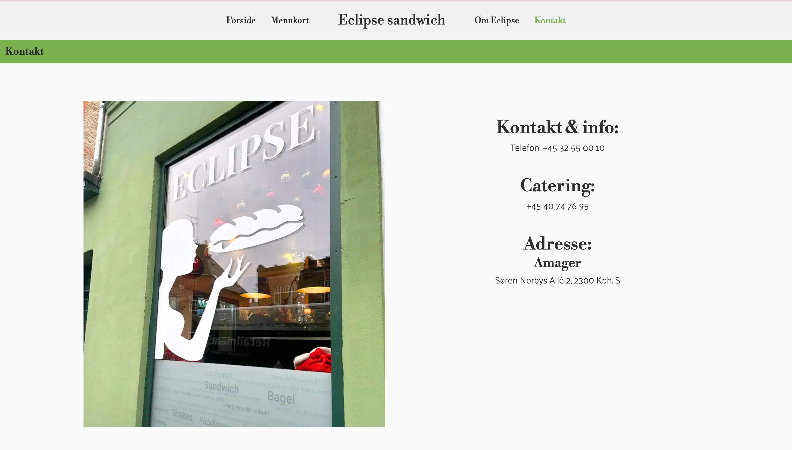

05_content
Tema beskrivelse:
Dette tema giver dig en grundlæggende indføring i videoproduktion, herunder præproduktion, optagelse og postproduktion. Vi anvender smartphone-kameraer til videooptagelse, ekstern lyd og Premiere Pro samt Audition til redigering. Dette er afgørende for at kunne producere mindre video- og fotoproduktioner selv samt for at forbedre dine evner til at kommunikere professionelt med kunder. Du vil blive introduceret til grundlæggende faglige begreber inden for video- og fotoproduktion, og ud over de færdigheder, du har erhvervet i det foregående tema, vil du bruge dem til at redesigne en virksomhedshjemmeside.
Klik her eller på billedet for
at se virksomhedshjemmesiden